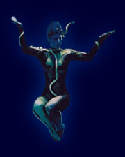

 |
Fehler 404 - Datei nicht gefunden
Die von Ihnen gewünschte Seite kann leider nicht
gefunden werden. Dies kann die Folge einer
Neustrukturierung dieser Web-Site sein. Aus diesem
Grund ist es sehr wahrscheinlich, daß die gewünschte
Seite an einer Stelle unserer Web-Site zu finden ist.
Wir wünschen Ihnen weiterhin viel Vergnügen! |